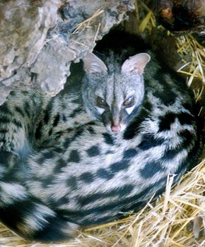

Especies del Parque
Estos son algunos de los habitantes de parque:



La nutria europea o paleártica (Lutra lutra) es un mamífero carnívoro de hábitat acuático. Se alimenta de peces, ranas y pequeñas presas que caza en el río. Cerca de sus lugares de cobijo, podremos ver toboganes que crean para llegar rápidamente al agua.
El buitre leonado (Gyps fulvus) es un ave rapaz, una de las mayores que puede encontrarse en la Península Ibérica. Su alimentación principal es la carroña, que localiza con su aguda vista.
La gineta (Genetta genetta) es una especie de mamífero carnívoro. Son grandes trepadoras, muy ágiles y grandes cazadoreas de pequeños animales. Aunque tambien se alimentan de los frutos del bosque que se peden encontrar en el parque.